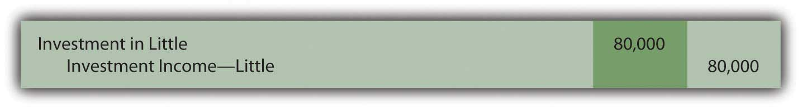
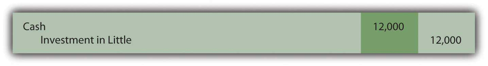
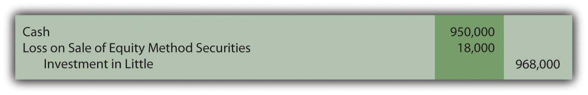

At the end of this section, students should be able to meet the following objectives:
Question: Not all investments in corporate stock are made solely for the possibility of gaining dividends and share price appreciation. As mentioned earlier, The Coca-Cola Company holds 35 percent ownership of Coca-Cola Enterprises. The relationship between that investor and investee is different. The investor has real power; it can exert some amount of authority over the investee. The Coca-Cola Company owns a large enough stake in CCE so that operating and financing decisions can be influenced. When one company holds a sizable portion of another company, is classifying and accounting for the investment as an available-for-sale or trading security a reasonable approach?
Answer: The answer to this question depends on the size of ownership. As the percentage of shares grows, the investor gradually moves from having little or no authority over the investee to a position where significant influence can be exerted. At that point, the investment no longer qualifies as a trading security or an available-for-sale security. Instead, the shares are reported by means of the equity methodA method of reporting an investment in stock that is applied when the owner has the ability to exert significant influence on the decisions of an investee; it is used to report investments where 20 percent or more and less than or equal to 50 percent of the shares are held, unless evidence exists that significant influence does not exist.. The rationale for holding the investment has changed.
The equity method views the relationship of the two companies in an entirely different fashion. The accounting process applied by the investor must be altered. Consequently, a note to the 2008 financial statements prepared by The Coca-Cola Company states, “We use the equity method to account for our investments for which we have the ability to exercise significant influence over operating and financial policies. Consolidated net income includes our Company’s proportionate share of the net income or net loss of these companies.”
The equity method is applied when the investor has the ability to apply significant influences to the operating and financing decisions of the investee. Unfortunately, the precise point at which one company gains that ability is impossible to ascertain. A bright line distinction simply does not exist. Although certain clues such as membership on the board of directors and the comparative size of other ownership interests can be helpful, the degree of influence is a nebulous criterion. When a question arises as to whether the ability to apply significant influence exists, the percentage of ownership can be used to provide an arbitrary standard.
According to U.S. GAAP, unless signs of significant influence are present, an investor owning less than 20 percent of the outstanding shares of another company reports the investment as either a trading security or available-for-sale security. In contrast, an investor holding 20 percent or more but less than or equal to 50 percent of the shares of another company is assumed to possess the ability to exert significant influence. Unless evidence is present that significant influence does not exist, the equity method is applied by the investor to report all investments in this 20–50 percent range of ownership.
Link to multiple-choice question for practice purposes: http://www.quia.com/quiz/2092970.html
Question: One company holds shares of another and has the ability to apply significant influence so that the equity method of accounting is appropriate. What reporting is made of an investment when the equity method is used? What asset value is reported on the owner’s balance sheet and when is income recognized under this approach?
Answer: When applying the equity method, the investor does not wait until dividends are received to recognize profit from its investment. Because of the close relationship, the investor reports income as it is earned by the investee. If, for example, a company reports net income of $100,000, an investor holding a 40 percent ownership immediately records an increase in its own income of $40,000 ($100,000 × 40 percent). In recording this income, the investor also increases its investment account by $40,000 to reflect the growth in the size of the investee company.
Income is recognized by the investor immediately as it is earned by the investee. Thus, it cannot be reported again when a subsequent dividend is collected. That would double-count the impact. Income must be recognized either when earned by the investee or when later distributed to the investor, but not at both times. The equity method uses the earlier date rather than the latter. Eventual payment of a dividend shrinks the size of the investee company. Thus, the investor decreases the investment account when a dividend is received if the equity method is applied. No additional income is recorded.
Companies are also allowed to report such investments as if they were trading securities. However, few have opted to make this election. If chosen, the investment is reported at fair value despite the degree of ownership with gains and losses in the change of fair value reported in net income.
Question: In applying the equity method, income is recognized by the investor when earned by the investee. Subsequent dividend collections are not reported as revenue by the investor but rather as a reduction in the size of the investment account to avoid including the income twice.
To illustrate, assume that Big Company buys 40 percent of the outstanding stock of Little Company on January 1, Year One, for $900,000. No evidence is present that provides any indication that Big lacks the ability to exert significant influence over the financing and operating decisions of Little. Thus, application of the equity method is appropriate. During Year One, Little reports net income of $200,000 and pays a total cash dividend to its stockholders of $30,000. What recording is appropriate for an investor when the equity method is applied to an investment?
Answer: The purchase of 40 percent of Little Company for cash is merely the exchange of one asset for another. Thus, the investment is recorded initially by Big at its historical cost.
Figure 12.11 Acquisition of Shares of Little to Be Reported Using the Equity Method

Ownership here is in the 20 to 50 percent range and no evidence is presented to indicate that the ability to apply significant influence is missing. Thus, according to U.S. GAAP, the equity method is applied. Big recognizes its portion of Little’s $200,000 net income as soon as it is earned by the investee. As a 40 percent owner, Big accrues income of $80,000. Because earning this income caused Little Company to grow, Big increases its investment account to reflect the change in the size of the investee.
Figure 12.12 Income of Investee Recognized by Investor Using the Equity Method
Big has recognized the income from this investee as it was earned. Consequently, any eventual dividend received from Little is a reduction in the investment in Little account rather than a new revenue. The investee company is smaller as a result of the cash payout. The balance in this investment account rises when the investee reports income but then falls (by $12,000 or 40 percent of the total distribution of $30,000) when that income is later passed through to the stockholders.
Figure 12.13 Dividend Received from Investment Accounted for by the Equity Method
On Big’s income statement for Year One, investment income—Little is shown as $80,000. Because the equity method is applied, the reader knows that this figure is the investor’s ownership percentage of the income reported by the investee.
At the end of Year One, the investment in Little account appearing on Big’s balance sheet reports $968,000 ($900,000 + 80,000 – 12,000). This total does not reflect fair value as with investments in trading securities and available-for-sale securities. It also does not disclose historical cost. Rather, the $968,000 asset balance is the original cost of the shares plus the investor’s share of the investee’s subsequent income less any dividends received. Under the equity method, the asset balance is a conglomerate of numbers.
Link to multiple-choice question for practice purposes: http://www.quia.com/quiz/2092971.html
Question: Assume, at the end of Year One, after the above journal entries have been made, Big sells all of its shares in Little Company for $950,000 in cash. When the equity method is applied to an investment, what is the appropriate recording of an eventual sale?
Answer: An investment reported using the equity method quickly moves away from historical cost as income is earned and dividends received. After just one year, the asset balance reported above by Big has risen from $900,000 to $968,000 (income of $80,000 was added and $12,000 in dividends were subtracted). If these shares are then sold for $950,000, a loss of $18,000 is recognized.
Figure 12.14 Sale of Investment Reported Using the Equity Method
If these shares had been sold for more than their $968,000 carrying value, a gain on the sale is recorded.
Summary. All investments in the stock of another company—where ownership is no more than 50 percent—must be accounted for in one of three ways depending on the degree of ownership and the intention of the investor.
Figure 12.15 Comparison of Three Methods to Account for Investments

*At the time of acquisition, an investor has the option of accounting for investments that are available for sale or investments where the ability to apply significant influence is present by the same method as that used for trading securities.
Link to multiple-choice question for practice purposes: http://www.quia.com/quiz/2092992.html
Link to multiple-choice question for practice purposes: http://www.quia.com/quiz/2093013.html
At some point, an owner can gain enough equity shares of another company to have the ability to apply significant influence. Use of the equity method then becomes appropriate. Significant influence is difficult to gauge so ownership of 20–50 percent of the outstanding stock is the normal standard applied in practice. However, if evidence is found indicating that significant influence is either present or does not exist, that takes precedence regardless of the degree of ownership. Under the equity method, income is recognized by the investor as soon as earned by the investee. The investment account also increases as a result of recognizing this income. Conversely, dividends are not reported as income but rather as reductions in the investment balance. Unless a permanent decline occurs, fair value is not taken into consideration in accounting for an equity method investment. When sold, the book value of the asset is removed so that any difference with the amount received can be recognized as a gain or loss.